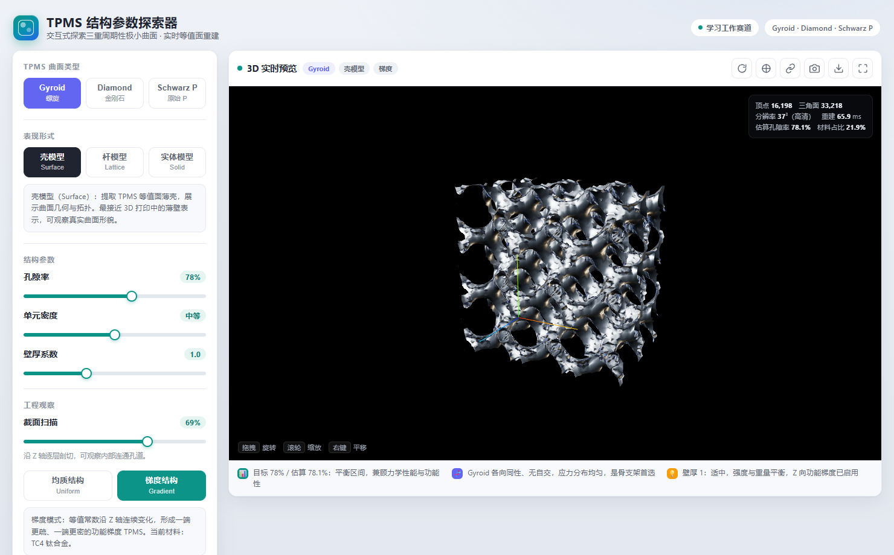
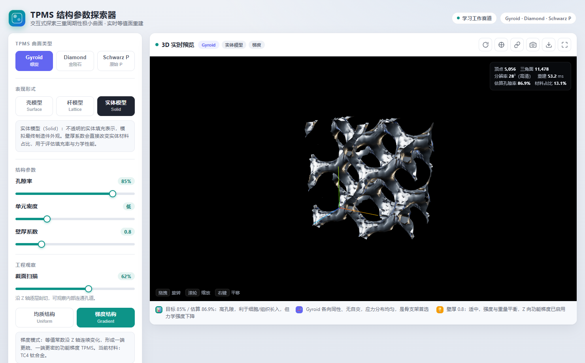
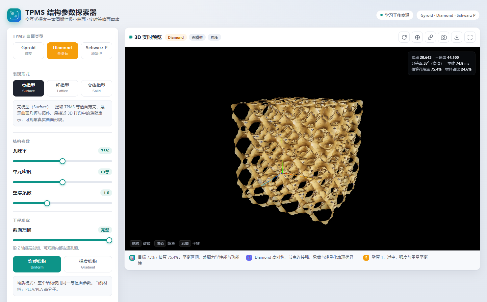
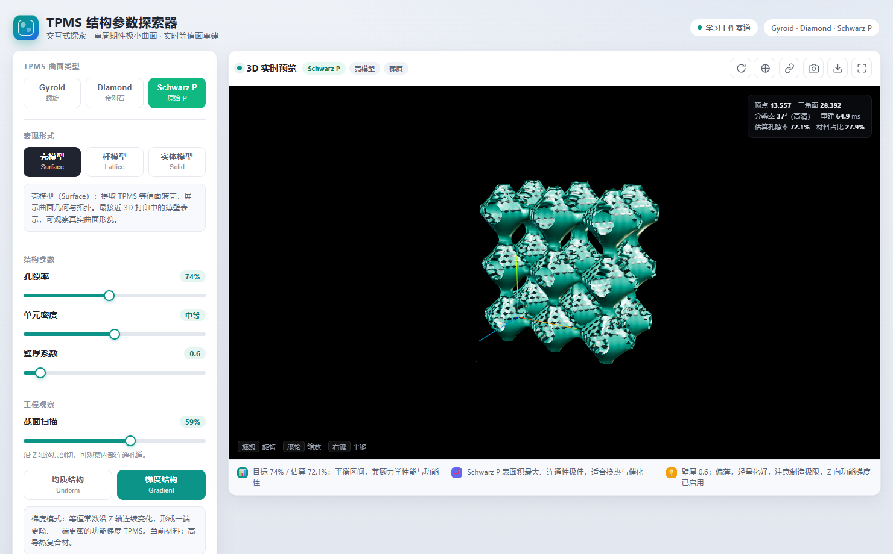

把复杂的 TPMS 建模过程压缩成一个零门槛网页体验。拖动滑块，就能观察 Gyroid、Diamond、Schwarz P 曲面如何从稀疏到致密、从骨架到实体。

从参数调节到结构观察，再到结果导出，形成完整的探索闭环。
孔隙率、单元密度、壁厚系数三个滑块实时驱动结构变化，拖动即重建，松手即高清。
Gyroid、Diamond、Schwarz P，每类配独立颜色、公式与权重交互，理解为什么长这样。
沿 Z 轴剖切观察内部连通孔道，或开启功能梯度结构，生成一端疏一端密的 TPMS。
一键导出可直接用于 3D 打印或仿真的 STL 模型，或导出当前视图的 PNG 截图。
TPMS 结构在多个领域都有重要应用，内置预设让你快速进入对应场景。

Gyroid 的连续螺旋通道带来良好的孔隙连通性，利于骨长入与应力分布，是人工骨支架的热门候选结构。

Diamond 节点连接清晰、结构对称，能在保留强度的同时大幅降低质量，适合轻量化零件的内部填充。

Schwarz P 表面积大、通道规则，提供高比表面积与均匀流动路径，适合换热、催化与散热场景。
无需安装、无需构建，打开即用。
自研实现，对穿过等值面的体素生成顶点并连接成连续网格，相比 Marching Cubes 无需维护庞大的查找表。
拖动滑块时低分辨率即时预览，松手后自动恢复高清网格；配合 sin/cos 预计算加速浏览器端重建。
主体是一个自包含的 HTML 文件，Three.js 0.160 通过 CDN 引入，适合静态部署，也能离线打包分发。